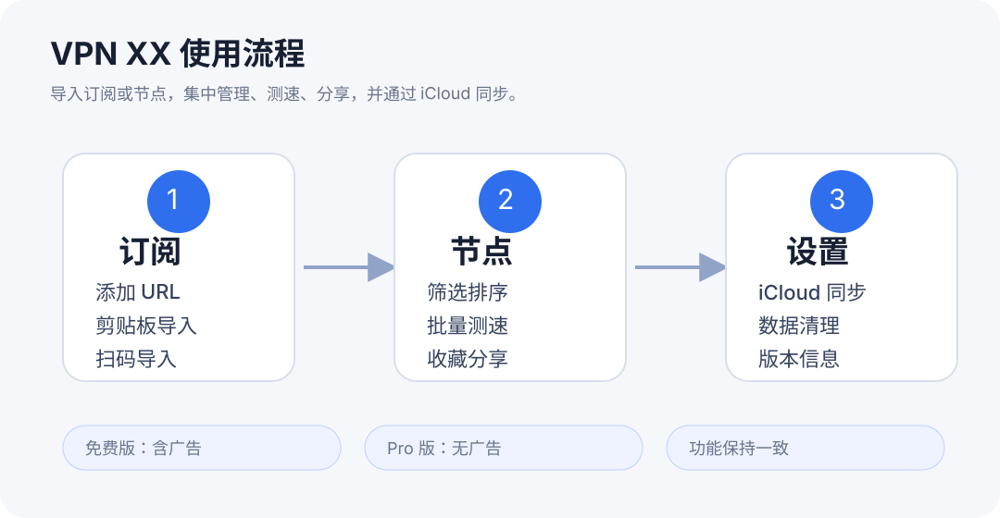
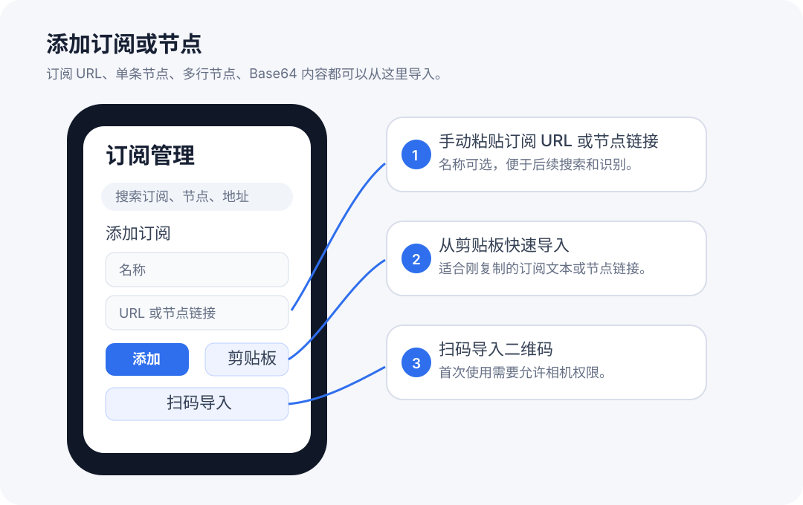
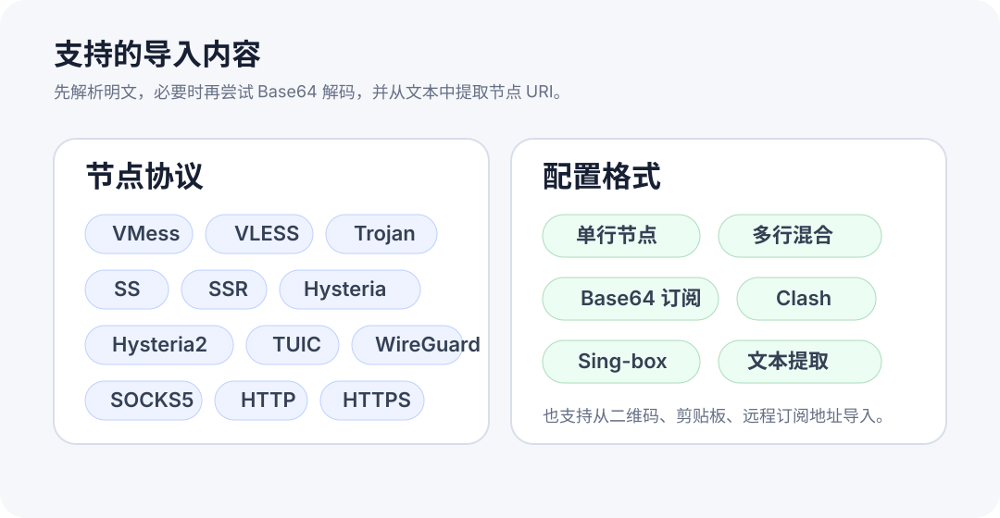
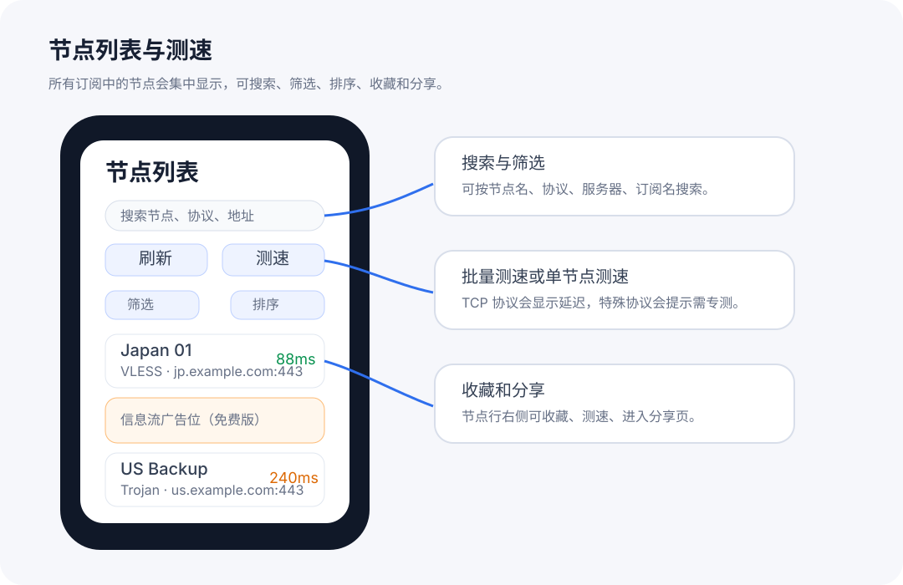
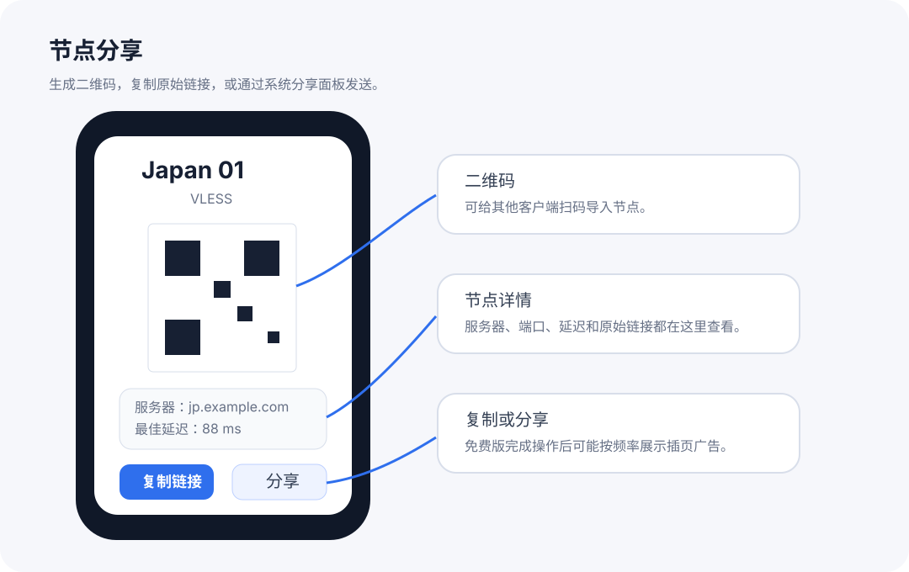
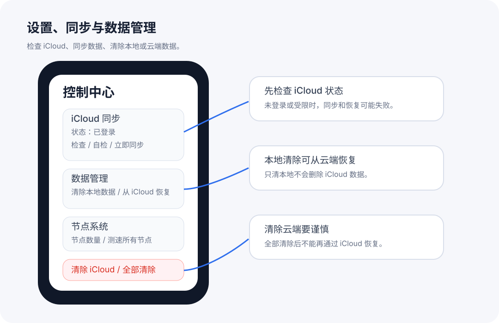
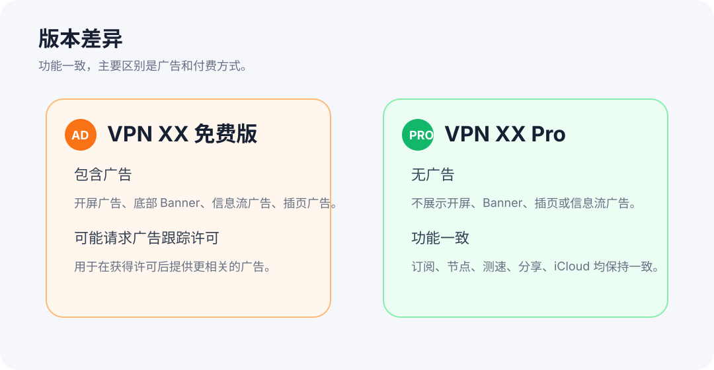

VPN XX · iOS 1.0.8
VPN XX iOS 1.0.8 是含广告的订阅与节点配置管理工具。该已发布版本只接受用户提供的配置和 URL，不含预设网络订阅源。它用于整理、检测和分享配置记录，不建立系统 VPN 隧道，也不提供 VPN 流量服务。

使用教程
使用 VPN XX 导入、刷新、整理、同步、分享和测试用户提供的代理订阅 URL 与节点信息。
官网说明更新于 2026 年 9 月 12 日
VPN XX iOS 1.0.8 是含广告的订阅与节点配置管理工具。该已发布版本只接受用户提供的配置和 URL，不含预设网络订阅源。它用于整理、检测和分享配置记录，不建立系统 VPN 隧道，也不提供 VPN 流量服务。
VPN XX PRO iOS 1.0.7 与 Mac 1.0.1 是付费无广告配置管理工具。这两个已发布版本均包含“网络来源”：用户可选择托管在 GitHub 上的第三方公开订阅来源，导入返回的节点记录，同时也支持自行导入。公开来源并非开发者自有服务器，其内容可能变化。App 本身不建立系统 VPN 隧道。
计划在后续替代版本中移除预设公开来源，保留用户自行导入。这是未来变更：更新官网不会移除设备上已安装的 PRO iOS 1.0.7 或 Mac 1.0.1 中的该功能。目前未公布替代版本发布或恢复上架日期。
官网说明更新于 2026 年 9 月 12 日
导入或刷新 URL 时，App 会向该来源发起请求；节点延迟和可达性检测会连接相应端点。VPN XX PRO iOS 1.0.7 与 Mac 1.0.1 使用“网络来源”功能时，还会访问 raw.githubusercontent.com 上的公开订阅源。来源运营方会收到 IP 地址、HTTP 元数据等网络请求信息。导入记录可保存在本机，并在启用时通过私人 iCloud 同步。VPN XX iOS 1.0.8 不含预设来源目录。







VPN XX 免费版的广告 SDK 可能处理用于广告投放、衡量、反作弊、安全、同意管理和合规的数据，包括在允许时的广告标识符、由 IP 推断的大致位置、设备与 App 信息、广告互动和诊断信息。Pro 版不初始化广告 SDK；订阅链接和节点可在你启用时通过 iCloud 同步。